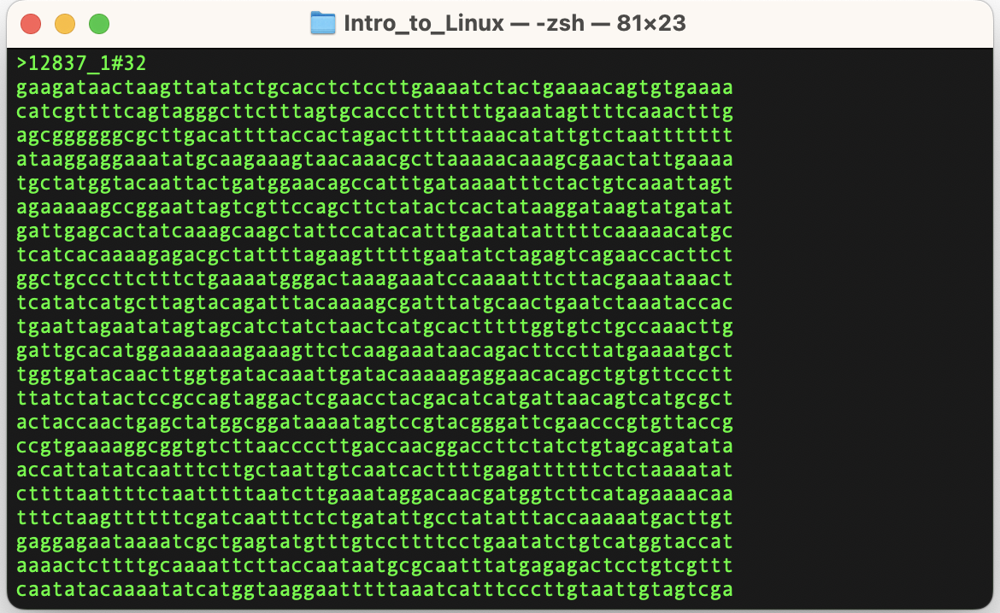
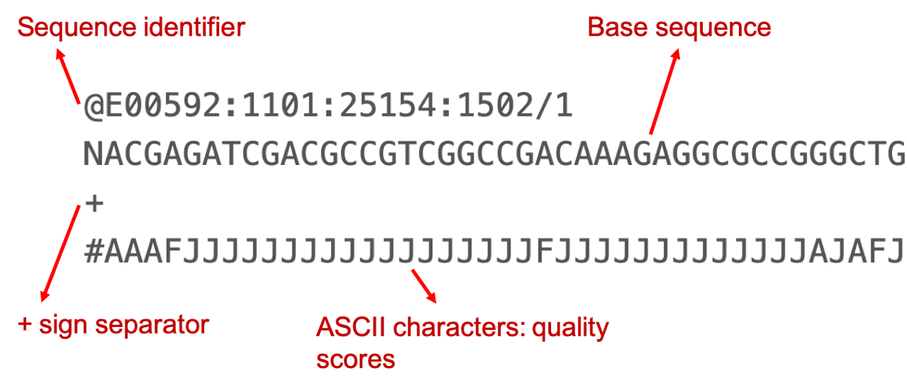
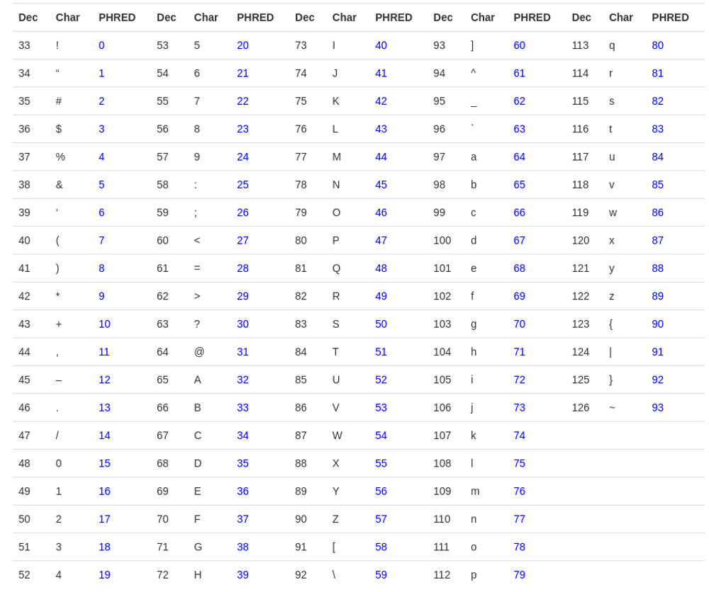
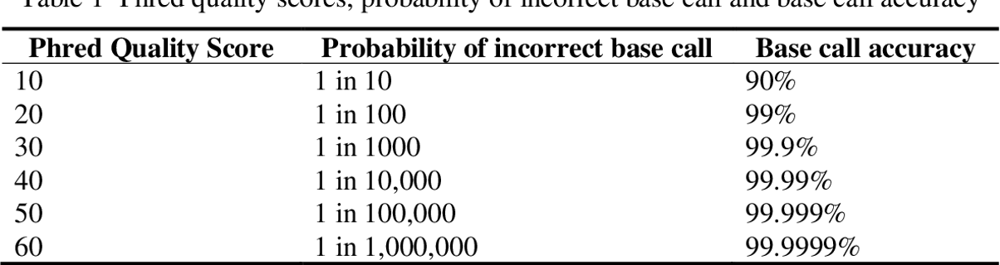
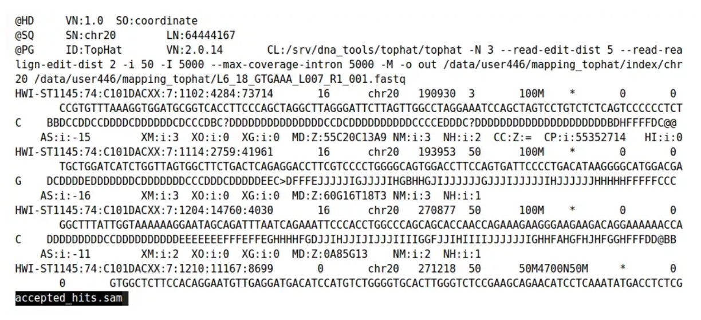
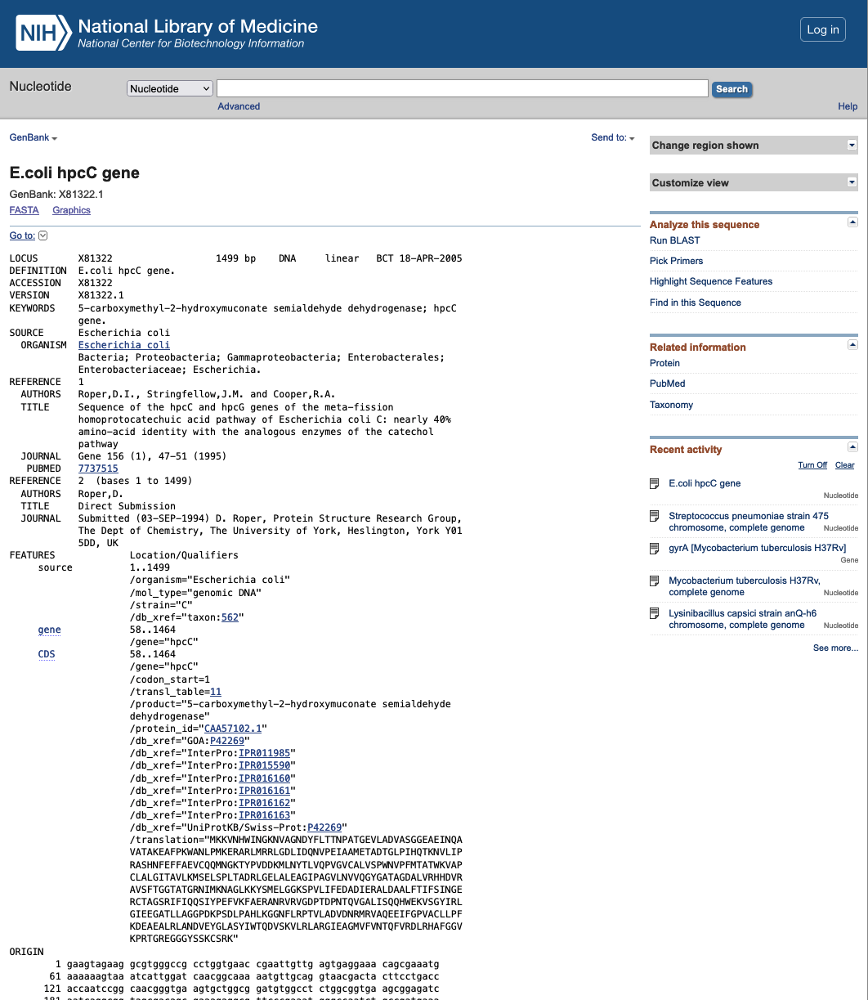

Overview
The information of biological sequences (nucleotides and amino acids) is stored in various file formats for easy access and analysis. Some of these files are in human-readable (text) format and others are in machine-readable (binary) format.
Fasta files
Fasta file is a text file which consists of a single and multiple sequences. Though it is not mandatory, fasta files generally have an extension of .fa, .fas, .fsa, .fna or .fasta. Each sequence has a one-line header, starting with the “>”, followed by the nucleotide (or amino acid) sequence. This sequence can be in a single line or span across multiple lines.

Fastq files
This section is also described in the F2
module
As the technologies evolved to sequence millions of “short reads”, storing the information in
multiple files became difficult to manage and also consumed more disk space. To address these
difficulties, a new file format, fastq (fast Q) was introduced in 2009. Now, fastq format is
the de facto standard of high-throughput sequence file format for next generation sequencers.
Fastq is a text file format (human-readable). It has 4 lines for each sequence entry.
- Header: starts with “@”
- Sequence
- Optional field: starts with “+”
- Quality scores
As the sequence and quality correspond to each other, the length of the 2nd and 4th lines are always equal.

Most often, paired-end data is stored in two files and they have “R1” and “R2” in their file names. The order of the reads in paired-end files correspond to their pairing order, i.e. entry 1 in R1 file is sequenced from the same template as entry 1 in R2 file, and so on and so forth. Therefore, the total number of sequences should always be equal in R1 and R2 files. If for any reason, any entry is removed from R1, its corresponding entry from R2 should also be removed.
Sometimes paired-end data is saved in interleaved fastq format, storing forward and reverse reads sequentially in a single file.
Phred score
A quality score (PHRED scale) for each base pair. It indicates how confident we can be that the base was sequenced and identified correctly.
Q = -10log10(p)
where p is the probability that the corresponding base call is incorrect.
Higher Q scores indicate a smaller probability of error.
Lower Q scores can result in a significant portion of the reads being unusable. They may also lead to increased false-positive variant calls, resulting in inaccurate conclusions.
A quality score of 20 (Q20) represents an error rate of 1 in 100 (meaning every 100 bp sequencing read may contain an error), with a corresponding call accuracy of 99%. When sequencing quality reaches Q30,
virtually all of the reads will be perfect, with no errors or ambiguities. This is why Q30 is considered a benchmark for quality in next-generation sequencing (NGS).
Fastq-sanger holds PHRED scores from 0-93 whereas fastq-Illumina provides PHRED scores from 0-62. Rather than giving numeric values of PHRED score they are provided in ASCII character codes from 33 to 126.
Why 33 to 126? Because 33 to 126 codes for single characters, so the score can be represented by a single character. Refer to the table below.
Based on the base character (a character that represents zero PHRED score ), the PHRED scale is often referred to as PHRED+33 (ASCII character !) or PHRED+64 (ASCII Character ?).
Phred table

The table depicts the error rate seen in the sequencing as per the Phred score. On an average the Qscore should be more than 30 to accept it as a good read.

Sequence Alignment Map (SAM) format
The sequence alignment map (SAM) format is a tab-delimited text file format developed to store read mapping. Every SAM file has two sections:
- Header section (optional)
- Alignment section

Entries in the header section always start with “@” and come before the alignment section. Each line in the header is tab-delimited and has a two letter header code called TAG. They follow the “TAG:VALUE” format. These TAG are:
- HD - The Header Line - 1st line
- SO - Sorting order of alignments (unknown(default), unsorted, query-name and coordinate)
- SQ - Reference sequence dictionary
- SN - Reference sequence name
- LN - Reference sequence length
- PG - Program
- ID - The program ID
- PN - The program name
- VN - Program version number
- CL - The Command actually used to create the SAM file
- RG - Read Group - “a set of reads that were all the product of a single sequencing run on one lane”
- QNAME: Read Name
- FLAG: Info on if the read is mapped, part of a pair, strand etc
- RNAME: Reference Sequence Name that the read aligns to
- POS: Leftmost position of where this alignment maps to the reference
- MAPQ:Mapping quality of read to reference (phred scale P that mapping is wrong)
- CIGAR: Compact Idiosyncratic Gapped Alignment Report
- RNEXT:Paired Mate Read Name
- PNEXT:Paired Mate Position
- TLEN:Template length/Insert Size (difference in outer coordinates of paired reads)
- SEQ:The actual read DNA sequence
- QUAL:ASCII Phred quality scores (+33)
- TAGS:Optional data - Lots of options e.g MD=String for mismatches
FLAG is a sum of alignment bit flags. Below is the table showing what each bit corresponds to.
| Bit | Description |
|---|---|
| 0x1 | Template having multiple segments in sequencing |
| 0x2 | Each segment properly aligned according to the aligner |
| 0x4 | Segment unmapped |
| 0x8 | Next segment in the template unmapped |
| 0x10 | SEQ being reverse complemented |
| 0x20 | SEQ of the next segment in the template being reversed |
| 0x40 | The first segment in the template |
| 0x80 | The last segment in the template |
| 0x100 | Secondary alignment |
| 0x200 | Not passing quality controls |
| 0x400 | PCR or optical duplicate |
64:first in the segment
16:read reverse complemented
8:second read is unmapped
2:each segment is properly aligned
1:paired end reads
This is the only combination that gives the total of 99
Binary Alignment Map (BAM) format
Binary Alignment Map (BAM) is a compressed SAM file. It is compressed using the BGZF compression method.
CRAM files
CRAM files are also compressed SAM files, designed by the EBI to reduce the storage space. CRAM files compression is based on the reference the data is aligned to.
Data is compressed using one of the general purpose compressors (gzip, bzip2). CRAM records are compressed using several different encoding strategies. For example, bases are reference compressed by encoding
base differences rather than storing the abses themselves. External reference sequences introduce the only external dependency into the CRAM format. When external reference sequences cannot be conveniently
used the reference sequences also can be embedded within the CRAM files. However, when embedded reference sequences are used then only those reference sequence regions are preserved in CRAM that has reads
aligned against them.
Genbank format
The Genbank format allows systematic storage of information about the sequence. An example of the genebank file can be accessed here;(adapted from future learn). A typical Genbank file has two parts: i) annotation section which starts with the line begining with the word "LOCUS", and ii) the sequence which starts with the line begining with "ORIGIN". The end of the genebank file is indicated by "//".

GFF3 format
GFF3 stands for gene feature file version 3. This is a tab-delimited file containing all the information that can be associated with a DNA or protein sequence. An example can be seen in the
below figure.
The file contains 9 fields:
- Sequence ID
- Source : algorithm used to derive the feature such as prodigal, prokka, Genescan etc.
- Feature type : deails what the feature is (cds, mRNA)
- Feature start
- Feature stop
- Score : these are e-values from the algorithm used
- Strand
- Phase : describes the reading frame relative to the reference where the featire begins. It has values 0, 1 and 2 for indicating number of based from the beginning where the first codon on the feature begins
- Attributes : provides additional information about each feature
Further reading
SAM format:
CRAM format: https://www.ebi.ac.uk/sites/ebi.ac.uk/files/groups/ena/documents/cram_format_1.0.1.pdf
GFF3 format: https://learn.gencore.bio.nyu.edu/ngs-file-formats/gff3-format/
Embl file format: http://scikit-bio.org/docs/0.5.3/generated/skbio.io.format.embl.html